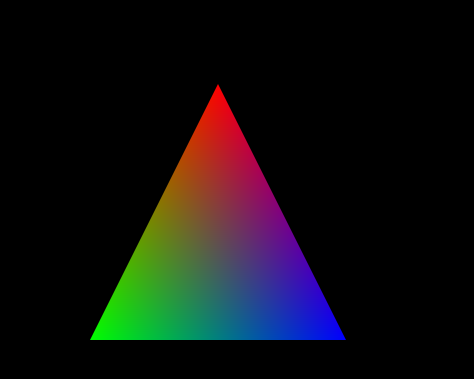
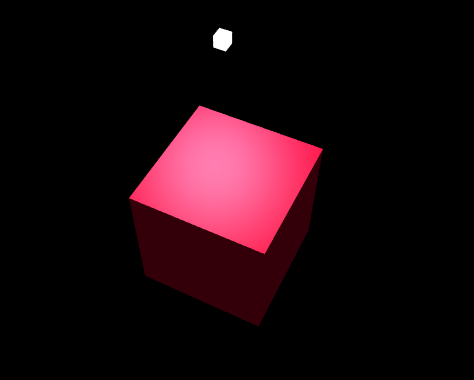

1 mins
可视域分析，通过设置观察点，计算其可看到的范围。

通过cesium，加载模型软件生成的BIM数据，并在前端绘制。

此示例展示了3dmax生产的模型数据，并通过鼠标点击建筑物高亮显示进行交互操作。

此示例展示了基于3dmax创建的obj模型转换成的点云数据。

此示例展示了倾斜摄影数据和建筑物的水面特效，移动地图可看到比较清晰的水波荡漾的效果。

此示例通过设置一些必要的参数，模拟了水淹模型的动态过程，颜色的深浅代表地面起伏的程度。

7 mins
此示例通过设置必要的参数，科比较真实的模拟洪水蔓延时的动态化过程，和水淹分析效果类似。

此示例展示了STK高程数据，并可绘制高程模型的等高线、等高面、等高线面三种渲染填充方式。

此示例展示了高程模型数据的坡面分析效果，通过设置绘制方式和标绘特定区域，来展示该区域的坡向分布情况。